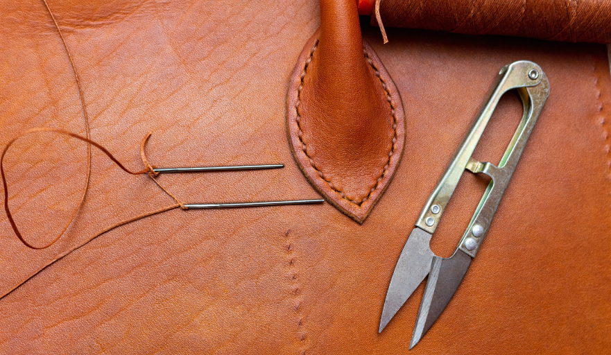
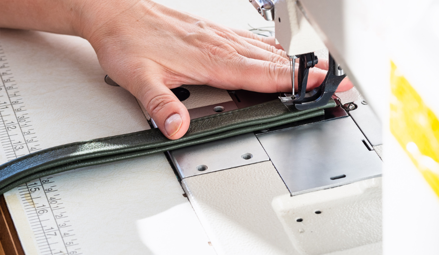

<!DOCTYPE html>
<html lang="en">
<head>
    <meta charset="UTF-8">
    <meta name="viewport" content="width=device-width, initial-scale=1.0">
    <title>Document</title>
</head>
<body>
      
</body>
</html><!doctype html>
<html class="no-js" lang="en">
    <head>
        <title>STAR BAG</title>
        <meta charset="utf-8">
        <meta http-equiv="X-UA-Compatible" content="IE=edge" />
        <meta name="author" content="ThemeZaa">
        <meta name="viewport" content="width=device-width,initial-scale=1.0" />
        <meta name="description" content="Elevate your online presence with Crafto - a modern, versatile, multipurpose Bootstrap 5 responsive HTML5, SCSS template using highly creative 48+ ready demos.">
        <!-- favicon icon -->
        <link rel="shortcut icon" href="images/blackLogo.png">
        <link rel="apple-touch-icon" href="images/apple-touch-icon-57x57.png">
        <link rel="apple-touch-icon" sizes="72x72" href="images/apple-touch-icon-72x72.png">
        <link rel="apple-touch-icon" sizes="114x114" href="images/apple-touch-icon-114x114.png">
        <!-- google fonts preconnect -->
        <link rel="preconnect" href="https://fonts.googleapis.com" crossorigin>
        <link rel="preconnect" href="https://fonts.gstatic.com" crossorigin>
        <!-- style sheets and font icons  -->
        <link rel="stylesheet" href="css/vendors.min.css"/>
        <link rel="stylesheet" href="css/icon.min.css"/>
        <link rel="stylesheet" href="css/style.css"/>
        <link rel="stylesheet" href="css/responsive.css"/>
        <link rel="stylesheet" href="demos/decor-store/decor-store.css" />
    </head>
    <body data-mobile-nav-style="classic">
        <!-- start header -->
        <header class="header-with-topbar">
          
        

  <!-- start navigation -->
            <nav class="navbar navbar-expand-lg header-light bg-transparent disable-fixed" data-header-hover="light">
                <div class="container-fluid">
                    <div class="col-auto">
                        <a class="navbar-brand" href="index.html">
                            
                            
                             
                        </a>
                    </div>
                    <div class="col-auto menu-order position-static xs-ps-0">
                        <button class="navbar-toggler float-start" type="button" data-bs-toggle="collapse" data-bs-target="#navbarNav" aria-controls="navbarNav" aria-label="Toggle navigation">
                            <span class="navbar-toggler-line"></span>
                            <span class="navbar-toggler-line"></span>
                            <span class="navbar-toggler-line"></span>
                            <span class="navbar-toggler-line"></span>
                        </button>
                        <div class="collapse navbar-collapse justify-content-center" id="navbarNav"> 
                            <ul class="navbar-nav alt-font"> 
                                <li class="nav-item"><a href="index.html" class="nav-link">Home</a></li>
                                <li class="nav-item"><a href="about-us.html" class="nav-link">About</a></li>
                                <li class="nav-item"><a href="attur.html" class="nav-link">Attur</a></li>
                                <li class="nav-item"><a href="vazhapadi.html" class="nav-link">Vazhapadi</a></li>
                                <li class="nav-item"><a href="blog.html" class="nav-link">Blog</a></li>
                                <li class="nav-item"><a href="contact.html" class="nav-link">Contact</a></li>
                                
                        </div>  
                    </div>
                </div>
            </nav>
        </header>   
        <!-- start page title -->
        <section class="page-title-center-alignment cover-background top-space-padding" style="background-image: url(images/demo-decor-store-title-bg.jpg)">
            <div class="container">
                <div class="row">
                    <div class="col-12 text-center position-relative page-title-extra-large">
                        <h1 class="alt-font d-inline-block fw-700 ls-minus-05px text-base-color mb-10px mt-3 md-mt-50px">Latest blog</h1>
                    </div>
                    <div class="col-12 breadcrumb breadcrumb-style-01 d-flex justify-content-center">
                        <ul>
                            <li><a href="index.html">Home</a></li> 
                            <li>Latest blog</li>
                        </ul>
                    </div>
                </div>
            </div></section>
            <br><br>
<center>
        
    </center>
    <center>
    <p class="text-dark fw-900 fs-30 mb-1">
        Crafting Quality: What Makes a Bag Brand Luxury?  
        </p>
</center>
<center>
<div class="container">

    <div class="blog-text">
        
    <p class="fs-22 fw-700 text-dark mb-0">Introduction </p>
    <p class="blogpara text-dark">When it comes to the world of fashion, luxury bags hold a special place in the hearts of enthusiasts and collectors alike. But what exactly sets a luxury brand apart from the countless others in the market? Is it the price tag, the celebrity endorsements, or perhaps something more intangible? From the plush boutiques of Paris to the high-fashion streets of Milan, luxury bags are not just accessories; they are statements of style, craftsmanship, and brand identity. In this blog, we'll delve into the core aspects that elevate a bag brand to luxury status, exploring everything from the materials used to the meticulous attention to detail that marks the essence of high-end fashion. Whether you're a fashion aficionado or simply curious about what makes these bags so special, join us as we uncover the elements that define the opulence of a luxury bag brand in the fashion industry.</p>

        <!-- <P class="blogpara text-dark">Have you ever wondered how your favorite bag made its journey from a mere idea in someone's mind to a stylish accessory on your shoulder? It's not just about coming up with a design and magically having it appear in stores. The process of bringing a bag to market is intricate, requiring careful planning, creativity, and strategic marketing. It’s a fascinating journey that combines art, science, and business. From the initial concept sketch to the moment a customer picks it up off the shelf, there's a lot that happens behind the scenes. Join us as we dive into the complete process of creating and selling a bag, exploring everything from design inspiration to manufacturing dynamics and innovative marketing strategies. Whether you’re a budding designer, a curious entrepreneur, or just a lover of bags, this exploration will provide you with a deeper appreciation for the accessories you love and the effort that goes into bringing them to market.

        </P>
        <P class="blogpara text-dark">Designing a bag that stands out in the marketplace requires creativity, attention to detail, and an understanding of the current market trends. The design process is where you give life to your concept, turning it into a tangible product prototype that can be touched, worn, and tested. This phase involves not only aesthetic decision-making but also practical considerations such as material selection, size, functionality, and sustainability. A well-thought-out design can significantly influence the bag's appeal, usability, and ultimately, its market success.
            
        </P> -->
    
        <p class="fs-22 fw-700 text-dark mb-0 ">The Craftsmanship Behind Luxury Bags</p>

       <p class="blogpara text-dark mb-1"> Luxury bags are not just accessories; they are the epitome of fashion's devotion to quality and aesthetic perfection. The craftsmanship involved in making these accessories separates the luxurious from the everyday, turning an ordinary bag into a masterpiece of design and function. This craft is an art passed down through generations, honed by skilled artisans who commit their lives to perfecting their trade.</p>


       <p class="fs-17 fw-700 text-dark mb-0 ">Handmade vs. Machine-made: A Comparison </p>
       <p class="blogpara text-dark mb-1">At the heart of luxury bag production is the debate between handmade and machine-made processes. Handmade luxury bags are synonymous with quality and individuality. Each stitch is placed with precision, allowing for adjustments and unique touches that machines cannot replicate. This personal touch not only guarantees a higher quality but also ensures that no two bags are exactly alike, imbuing each with its own story and character.
        </p>

       <p class="blogpara text-dark mb-1"> Conversely, machine-made bags, while more uniform and capable of being produced on a larger scale, often lack the unique nuances of their handmade counterparts. The efficiency of machines can't replicate the detailed craftsmanship of a skilled artisan. Thus, while machine-made bags can still be of high quality, they typically do not reach the pinnacle of luxury that handmade bags do.</p>

       <p class="fs-17 fw-700 text-dark mb-0 ">Attention to Detail: The Mark of Luxury</p>
       <p class="blogpara text-dark mb-1">Attention to detail is what truly sets luxury bags apart from the rest. Every aspect, from the stitching and lining to the placement of logos and hardware, is meticulously planned and executed. For instance, luxury brands often use hand-stitched linings that perfectly fit the curves of the bag, ensuring a seamless look and feel that machine stitching can't achieve. The hardware, including zippers, clasps, and chains, is usually custom-made and polished to a high shine, adding to the bag's exclusive allure. These elements, though small, contribute significantly to the overall aesthetics and durability of luxury bags, making them not just a fashion statement but an investment piece that can last for years.</p>

       <p class="fs-22 fw-700 text-dark mb-0 ">The Role of Materials in Luxury Bag Brands</p>
       <p class="blogpara text-dark mb-1">The materials chosen for luxury bags are just as important as the craftsmanship. The difference in quality and feel between a luxury bag and a mass-produced one is often immediately noticeable, with luxury brands opting for only the highest quality materials. These materials are chosen not just for their aesthetic appeal but for their durability and ability to age gracefully.</p>


        <p class="fs-17 fw-700 text-dark mb-0"> Exotic Leathers: A Touch of Opulence</p>
        <p class="blogpara text-dark">Exotic leathers have long been a hallmark of luxury bags, offering a touch of opulence that is difficult to replicate. From the silky smooth texture of calfskin to the unique patterns of ostrich and crocodile skin, these materials are highly sought after for their beauty and rarity. Harvesting these leathers is an intricate process, requiring skilled handling to preserve their natural textures and patterns. Luxury brands invest considerable efforts into sourcing the finest exotic leathers, ensuring that the bags not only look exquisite but feel luxurious to the touch.</p>

       
        <p class="fs-17 fw-700 text-dark mb-0">High-Quality Fabrics: Elevating the Aesthetic</p> <br>
        


        <p class="blogpara text-dark">In addition to leathers, high-quality fabrics play a crucial role in the creation of luxury bags. Silk, velvet, and cashmere linings are often used for their soft, plush feel, elevating the bag's overall aesthetic and sensory experience. These materials are chosen for their weave, density, and texture, contributing to the bag's structure and durability. Luxury brands meticulously select their fabrics, often custom-making them to ensure that they perfectly complement the design and feel of the bag. This level of detail ensures that every aspect of the bag, inside and out, reflects the brand's commitment to quality.</p>
        <p class="fs-17 fw-700 text-dark mb-0">Sustainable Sourcing: A Modern Luxury Trend</p> 


       <p class="blogpara text-dark">In recent years, sustainable sourcing has emerged as a significant trend in the luxury bag industry. As consumers become more environmentally conscious, luxury brands are adapting by sourcing materials in ways that minimize environmental impact. This includes using responsibly sourced leathers, recycled fabrics, and innovative materials such as plant-based leathers and textiles made from recycled plastic bottles. These efforts not only help reduce the fashion industry's environmental footprint but also align with the values of a growing segment of consumers who seek luxury that is both opulent and ethical. Sustainable sourcing has become a new marker of luxury, distinguishing brands that are committed to combining quality with conscientiousness.</p>

        <p class="blogpara text-dark"> The craftsmanship and materials behind luxury bags highlight the fashion industry's dedication to delivering not just products but works of art. From the skillful hands of artisans shaping each piece to the careful selection of materials that define its character, luxury bags embody a commitment to excellence that transcends the ordinary. The attention to detail, the use of exclusive materials, and the shift towards sustainable practices illustrate a complex interplay of tradition and innovation, making luxury bags not just accessories but symbols of cultural and environmental consciousness.</p>


        <p class="fs-22 fw-700 text-dark mb-0">Brand Identity: Building a Luxury Reputation</p> 


        <p class="blogpara text-dark ">When it comes to luxury bags, brand identity is everything. It's not just about the quality of materials or the precision of the craftsmanship—though these are undoubtedly crucial—it's also about what the brand represents in the hearts and minds of the consumers. A luxury bag brand stands out through its distinct identity, built upon a rich narrative, selective endorsements, and unique partnerships that elevate its status and desirability in the fashion industry. Let's delve deeper into how heritage, celebrity endorsements, and exclusive collaborations contribute significantly to crafting a luxury reputation.</p>

        <p class="fs-17 fw-700 text-dark mb-0">Heritage and Legacy: The Story Matters</p> 


       <p class="blogpara text-dark">The heritage and legacy of a brand play an immense role in building its luxury identity. Stories of inception, tales of the founder's vision, and the journey of craftsmanship over the years contribute significantly to a brand's allure. Imagine a luxury bag, hand-stitched in a workshop that has been operational for over a century, using techniques passed down through generations. This heritage not only showcases a commitment to quality but also infuses each bag with a sense of history and exclusivity.</p>

        <p class="blogpara text-dark"> Moreover, luxury brands often emphasize their origins and the cultural significance of their craftsmanship. For instance, an Italian luxury bag brand might highlight its roots in a region known for its exquisite leatherwork, linking the brand to a rich tradition of artisanal excellence. This narrative is crucial not just for attracting customers who appreciate quality, but also for those who value the story and tradition behind what they choose to wear.</p>

        <p class="fs-17 fw-700 text-dark mb-0">Celebrity Endorsements: Impact on Perception</p> 


       <p class="blogpara text-dark">Celebrity endorsements play a pivotal role in shaping the perception of luxury bag brands. When a high-profile celebrity is seen carrying a particular handbag, it instantly gains an aura of desirability and status. The psychology behind this is simple: people aspire to emulate the lifestyle and choices of those they admire or aspire to be like. Therefore, when a luxury brand aligns itself with celebrities who not only embody the brand's ideals but also have a significant following, it elevates the brand's prestige in the eyes of the consumer.</p>

        <p class="blogpara text-dark">However, it's not just any endorsement that counts. Luxury brands are incredibly selective about the celebrities they partner with, ensuring that these individuals reflect the brand's ethos, style, and target audience. For example, a luxury brand known for its classic and timeless elegance might partner with a celebrity known for their sophisticated and understated style. These endorsements can come in various forms, from red carpet appearances with the brand's latest creation to social media posts that reach millions of followers worldwide.</p>

        <p class="fs-17 fw-700 text-dark mb-0">Exclusive Collaborations: Cultivating Prestige</p> <br>

        

       <p class="blogpara text-dark">Exclusive collaborations are another crucial aspect of building a luxury brand's identity. By partnering with designers, artists, or even other luxury brands from different sectors, a bag brand can create limited edition pieces that are highly sought after. These collaborations are not just about creating a unique product; they are about merging different forms of artistry and innovation to elevate the brand's prestige and offer something genuinely unique to the consumer.</p>

        <p class="blogpara text-dark">Such collaborations often receive extensive media coverage and become the talk of the town, further heightening the brand's luxury status. For instance, a collaboration between a luxury bag brand and a renowned artist might result in a collection that combines high fashion with fine art, making each piece a collectible. Buyers of these limited edition pieces are not just purchasing a bag; they are investing in a piece of art, a snippet of history that embodies the pinnacle of creative collaboration.</p>

        
<p  class="blogpara text-dark">Furthermore, these collaborations can serve to broaden a brand's appeal, reaching out to new demographics and markets. By partnering with figures or brands that resonate with a younger audience or a different cultural background, a luxury brand can diversify its identity while maintaining its core values of exclusivity and excellence.</p>


<p class="blogpara text-dark"> Exclusive collaborations, celebrity endorsements, and a revered heritage are not mere marketing strategies; they are the pillars upon which a luxury bag brand builds its identity. These elements work together to create a narrative of excellence, tradition, and exclusivity that attracts consumers not just to a product, but to a legacy. As the fashion industry continues to evolve, the luxury brands that remain true to their identity while innovatively embracing new trends and partnerships are the ones that stand the test of time.</p>

<p class="fs-22 fw-700 text-dark mb-0">Conclusion</p> 


<p class="blogpara text-dark">In the realm of the fashion industry, the allure of luxury bags is undeniable. These iconic pieces symbolize not just status but also the dedication and craftsmanship that go into their creation. From exquisite materials to meticulous craftsmanship, each element plays a crucial role in distinguishing a luxury bag brand. Brand identity further elevates this distinction, shaping a narrative that resonates with consumers on a personal level.</p><br>

<p  class="blogpara text-dark">- Materials: Using only the finest, sourcing responsibly.</p><br>
<p  class="blogpara text-dark">- Craftsmanship: Skilled artisans dedicating hours to perfect a single piece..</p><br>

<p  class="blogpara text-dark">- Brand Identity: A story that connects, inspires, and endures.</p><br>


<p  class="blogpara text-dark">In essence, the making of a luxury bag is an art form—a blend of tradition, innovation, and a relentless pursuit of perfection. As we unpack what makes a bag brand luxury, it's clear that it's not just about the product; it's about the experience it offers, the legacy it carries, and the unwavering commitment to excellence. Luxury bags, therefore, stand as a testament to what the fashion industry is capable of when it marries creativity with craftsmanship.</p>


<!-- <p class="fs-17 fw-700 text-dark mb-0">-> User Testing:</p>  -->
<!-- <p class="blogpara text-dark"> Launching your bag line, like any fashion startup, requires a mix of creativity, business acumen, and persistence. By avoiding common pitfalls and adhering to these final tips, you're setting a solid foundation for a brand that not only launches successfully but thrives in the competitive fashion industry. Remember, the key to success is learning from every step of the journey and always striving to offer something unique and valuable to your customers. Good luck!</p> -->


<!-- <p class="fs-17 fw-900 text-dark mb-0">Ensuring Quality Control</p>

<p class="blogpara text-dark">Quality control is integral to manufacturing and should be pervasive throughout the process, from the selection of materials to the final production stages. Implementing a rigorous quality control system involves:</p>

<p class="fs-17 fw-700 text-dark mb-0">-> Material Inspection:</p>
<p class="blogpara text-dark">Incoming materials should be thoroughly inspected to ensure they meet predefined standards. This step prevents issues in later stages of production</p>
<p class="fs-17 fw-700 text-dark mb-0">-> In-process Inspections:</p> 
<p class="blogpara text-dark"> During manufacturing, periodic inspections should be conducted to identify and rectify errors early in the process. This proactive approach can save time and resources.</p>
<p class="fs-17 fw-700 text-dark mb-0">-> Final Product Inspection:</p>
<p class="blogpara text-dark">Before the finished bags are packed and shipped, a comprehensive inspection is necessary to ensure they meet all quality specifications. This final check acts as a safeguard against defective products entering the market.</p>
<p class="fs-17 fw-700 text-dark mb-0">-> Feedback Loop:</p> 
<p class="blogpara text-dark mb-1">Establishing a feedback loop with the manufacturing partner for continuous improvement is beneficial. It ensures that any issues are addressed and that the product quality remains consistent over time.</p>


<p class="blogpara text-dark">Your budget plays a crucial role in narrowing down your options. Bags come in a wide range of prices,
and it's important to find something that you love and is also a wise financial decision.</p>
<p  class="fs-17 fw-700 text-dark mb-0">Bringing Your Bag to Market</p>

<p class="blogpara text-dark">After the manufacturing phase, the next critical step is introducing your bag to the market. This stage involves developing a strategic marketing plan, establishing sales and distribution channels, and engaging with customers to build a loyal customer base.</p>

 <p class="fs-17 fw-700 text-dark mb-0">Developing a Marketing Strategy</p> 
<p class="blogpara text-dark">A well-thought-out marketing strategy is crucial for the successful launch of your bag. The strategy should encompass:</p> -->
<!-- 
<p class="fs-17 fw-700 text-dark mb-0">-> Market Research:</p>
<p class="blogpara text-dark mb-1"> Understand your target market's needs, preferences, and behaviors. This research will guide the creation of messaging that resonates with your audience.</p>

<p class="fs-17 fw-700 text-dark mb-0">-> Branding:</p>
<p class="blogpara text-dark mb-1">Develop a strong brand identity that reflects the uniqueness of your bag. This includes a compelling brand story, logo, and visual elements that make your product stand out.</p>

<p class="fs-17 fw-700 text-dark mb-0">->Digital Marketing:</p>
<p class="blogpara text-dark mb-1">Utilize digital channels such as social media, email marketing, and content marketing to reach and engage with your target audience. High-quality visuals and engaging content can help in creating buzz around your product.
</p>
<p class="fs-17 fw-700 text-dark mb-0">->Influencer Partnerships:</p>
<p class="blogpara text-dark mb-1">Collaborating with influencers can amplify your reach and lend credibility to your brand. Choose influencers whose audience aligns with your target market.
</p>
<p class="fs-17 fw-700 text-dark mb-0">->Launch Events: :</p>
<p class="blogpara text-dark mb-1">Consider organizing launch events or pop-up shops to create excitement around your product. These events provide an opportunity for direct customer engagement and can generate media coverage.

<p class="blogpara text-dark mb-1">Implementing a multi-channel marketing approach allows you to reach potential customers through various touchpoints, increasing the visibility and appeal of your bag.</p>


<p class="fs-17 fw-700 text-dark mb-0">Implementing Sales and Distribution Channels:</p>
<p class="blogpara text-dark mb-1">Choosing the right sales and distribution channels is critical for your bag’s market success. Options include:</p>


<p class="fs-17 fw-700 text-dark mb-0">->Online Sales:</p>
<p class="blogpara text-dark mb-1">Setting up an e-commerce website or leveraging online marketplaces are effective ways to reach a broad audience. Digital sales platforms also provide valuable data about customer preferences and buying behavior.

<p class="fs-17 fw-700 text-dark mb-0">->Retail Partnerships:</p>
<p class="blogpara text-dark mb-1">Partnering with retail stores can help in reaching customers who prefer shopping in-store. Select retail partners that align with your brand identity and target market.</p>

    <p class="fs-17 fw-700 text-dark mb-0">->Direct Sales:</p>
<p class="blogpara text-dark mb-1"> Participating in trade shows, craft fairs, or markets can be effective for direct sales. These venues offer the chance to engage with customers face-to-face and receive immediate feedback.

    <p class="fs-17 fw-700 text-dark mb-0">-> Wholesale Distribution:</p>
    <p class="blogpara text-dark mb-1"> Wholesale distribution can expand your reach by placing your bags in various retail outlets. This channel requires negotiation of terms that protect your brand while ensuring profitability.</p>

    <p class="blogpara text-dark mb-1"> Whichever channels you choose, consistency in branding and customer experience across all platforms is essential.
    </p>
    <p class="fs-17 fw-700 text-dark mb-0">Engaging with Customers and Obtaining Feedback</p>
    <p class="blogpara text-dark mb-1"> Engaging with your customers doesn't end with the sale. Post-sale engagement strategies can turn one-time buyers into loyal customers and brand advocates. Strategies include:</p>
    
    <p class="fs-17 fw-700 text-dark mb-0">-> Customer Service: </p>
    <p class="blogpara text-dark mb-1"> Providing exceptional customer service, including easy returns and exchanges, can significantly impact customer satisfaction and loyalty.
    </p>

    <p class="fs-17 fw-700 text-dark mb-0">-> Social Media Engagement:</p>
    <p class="blogpara text-dark mb-1"> Actively engaging with customers on social media platforms fosters a community around your brand. Responding to comments, messages, and sharing user-generated content can enhance brand loyalty.
    </p> --> 

    <!-- <p class="fs-17 fw-700 text-dark mb-0">->Requesting Reviews:</p>
    <p class="blogpara text-dark mb-1">  Encourage satisfied customers to leave positive reviews on your website or social media profiles. Positive reviews can influence potential buyers and improve brand credibility.
    </p>

    <p class="fs-17 fw-700 text-dark mb-0">-> Social Media Engagement:</p>
    <p class="blogpara text-dark mb-1">Regularly soliciting customer feedback through surveys can provide insights into customer satisfaction and areas for improvement. This feedback is invaluable for product development and enhancing the customer experience.
    </p>


<p class="blogpara text-dark">In conclusion, bringing a bag to market involves a series of interconnected steps, from meticulous manufacturing to strategic marketing and engaging customer interactions. By navigating these processes effectively, you can transform your bag design concept into a successful market-ready product that appeals to and satisfies your target audience. Engendering customer loyalty and continuously adapting to feedback are keys to sustaining success in the competitive world of bag design and retail.</p> -->
</div>
</div>
</center>
        <!-- start footer -->
        <footer class="footer-dark bg-dark-gray pb-0 pt-0 cover-background" style="background-image:url('images/demo-decor-store-footer-bg.jpg')">
            <div class="container pt-4 pb-4 md-pt-45px md-pb-45px">
                <div class="row justify-content-center">

                    <!-- start footer column -->

                    <div class="col-lg-2">
                        <!-- <a href="index.html" class="footer-logo mb-15px d-inline-block"></a> -->
                        <!--  -->
                        
                        <div class="elements-social social-icon-style-02 mt-15px">
                            <ul class="small-icon light">
                                <li><a class="facebook" href="https://www.facebook.com/" target="_blank"><i class="fa-brands fa-facebook-f"></i></a></li>
                                <li><a class="dribbble" href="http://www.dribbble.com" target="_blank"><i class="bi bi-linkedin"></i>                      </a></li> 
                                <li><a class="twitter" href="http://www.twitter.com" target="_blank"><i class="fa-brands fa-twitter"></i></a></li> 
                                <li><a class="instagram" href="http://www.instagram.com" target="_blank"><i class="fa-brands fa-instagram"></i></a></li> 
                            </ul>
                        </div>
                    </div>
                    <div class="col-6 col-lg-3 last-paragraph-no-margin order-sm-1 md-mb-50px xs-mb-30px">
                        <!-- <a href="index.html" class="footer-logo mb-15px d-inline-block"></a> -->
                        <span class="fs-16 alt-font fw-500 d-block text-white mb-5px">Stay Updated with Exclusive Offers!</span>
                        <p class="w-80 sm-w-100">Thank you for visiting our website. Stay connected with us for the latest updates, promotions, and
                            news by subscribing to our newsletter !!</p>
                        <!-- <div class="elements-social social-icon-style-02 mt-15px">
                            <ul class="small-icon light">
                                <li><a class="facebook" href="https://www.facebook.com/" target="_blank"><i class="fa-brands fa-facebook-f"></i></a></li>
                                <li><a class="dribbble" href="http://www.dribbble.com" target="_blank"><i class="bi bi-linkedin"></i>                      </a></li> 
                                <li><a class="twitter" href="http://www.twitter.com" target="_blank"><i class="fa-brands fa-twitter"></i></a></li> 
                                <li><a class="instagram" href="http://www.instagram.com" target="_blank"><i class="fa-brands fa-instagram"></i></a></li> 
                            </ul>
                        </div> -->
                    </div>
                    <!-- end footer column -->
                    <!-- start footer column --
                    <div class="col-6 col-lg-2 col-sm-4 xs-mb-30px order-sm-3 order-lg-2">
                        <span class="fs-16 alt-font fw-500 d-block text-white mb-5px">Categories</span>
                        <ul>
                            <li><a href="demo-decor-store-shop.html">Bed room</a></li>
                            <li><a href="demo-decor-store-shop.html">Living room</a></li>
                            <li><a href="demo-decor-store-shop.html">Lightning</a></li>
                            <li><a href="demo-decor-store-shop.html">Fabrics sofa</a></li>
                        </ul>
                    </div>
                    <!-- end footer column -->
                    <!-- start footer column -->
                    <div class="col-6 col-lg-2 col-sm-4 xs-mb-30px order-sm-3 order-lg-2">
                        <span class="fs-16 alt-font fw-500 d-block text-white mb-5px">Quick Link</span>
                        <ul>
                            <li><a href="index.html">Home</a></li>
                            <li><a href="about-us.html">About us</a></li>
                            <li><a href="attur.html">Attur</a></li>
                            <li><a href="vazhapadi.html">Vazhapadi</a></li>
                            <li><a href="blog.html">Blog</a></li>
                            <li><a href="contact.html">Contact</a></li>
                        </ul>
                    </div>
                    <!-- end footer column -->
                    <!-- start footer column --
                    <div class="col-6 col-lg-2 col-sm-4 xs-mb-30px order-sm-3 order-lg-2">
                        <span class="fs-16 alt-font fw-500 d-block text-white mb-5px">Account</span>
                        <ul>
                            <li><a href="demo-decor-store-account.html">My account</a></li>
                            <li><a href="demo-decor-store-cart.html">Orders</a></li>
                            <li><a href="demo-decor-store-checkout.html">Checkout</a></li>
                            <li><a href="#">My wishlists</a></li>
                        </ul>
                    </div>
                    <!-- end footer column -->  
                    <!-- start footer column -->
                    <div class="col-lg-3 col-sm-6 ps-20px sm-ps-15px md-mb-50px xs-mb-0 order-sm-2 order-lg-5">
                        <span class="fs-16 alt-font fw-500 d-block text-white mb-5px">Newsletter</span>
                        <div class="mb-20px">Get everything you need succeed!</div>
                        <div class="d-inline-block w-100 newsletter-style-02 position-relative mb-15px"> 
                            <form action="email-templates/subscribe-newsletter.php" method="post" class="position-relative w-100">
                                <input class="bg-blue-tangaroa border-color-transparent-white-light w-100 form-control pe-50px ps-20px lg-ps-15px required" type="email" name="email" placeholder="Enter your email" />
                                <input type="hidden" name="redirect" value="">
                                <button class="btn pe-20px submit" aria-label="submit"><i class="icon feather icon-feather-mail icon-small text-white"></i></button>
                                <div class="form-results border-radius-4px pt-5px pb-5px ps-15px pe-15px fs-14 lh-22 mt-10px w-100 text-center position-absolute d-none"></div>
                            </form>
                        </div>
                        <div class="footer-card">
                            <a href="#" class="d-inline-block me-5px align-middle"></a>
                            <a href="#" class="d-inline-block me-5px align-middle"></a>
                            <a href="#" class="d-inline-block me-5px align-middle"></a>
                            <a href="#" class="d-inline-block me-5px align-middle"></a>
                        </div>
                    </div>
                    <!-- end footer column -->                        
                </div>
            </div> 
            <div class="border-top border-color-transparent-white-light pt-30px pb-30px">
                <div class="container">
                    <div class="row align-items-center justify-content-center">
                        <div class="col-xl-8 last-paragraph-no-margin text-center text-xl-start lg-mt-20px order-3 order-xl-1  ">
                            <p class="fs-14 mb-0 w-90 xl-w-100 Copyright">"Copyright © 2024 All Rights Reserved" _ Developed with love by <a href="https://karmadev.in/" class="text-white text-decoration-line-bottom"> KarmaDev.in</a> </p>
                        </div>
                        <div class="support">
                            <div class="col-6 col-xl-2 col-md-3 col-sm-5 text-center text-xl-start order-1 order-xl-2">
                                <span class="lh-26 alt-font d-block">Need support?</span>
                                <a href="tel:9443398061" class="fs-13 text-white fw-500">+91 9443398061</a>
                            </div>
                            <div class="col-6 col-xl-2 col-md-3 col-sm-5 text-center text-xl-start order-2 order-xl-3">
                                <span class="lh-26 alt-font d-block">Customer care</span>
                                <a href="mailto:info@starbagcenter.com" class="fs-13 text-white fw-500">info@starbagcenter.com</a>
                            </div>
                        </div>
                        </div>
                </div>                           
            </div>
        </footer>
        <!-- end footer -->
        <!-- start cookie message -->
        <div id="cookies-model" class="cookie-message bg-dark-gray border-radius-8px"> 
            <div class="cookie-description fs-14 text-white mb-20px lh-22">We use cookies to enhance your browsing experience, serve personalized ads or content, and analyze our traffic. By clicking "Allow cookies" you consent to our use of cookies. </div>   
            <div class="cookie-btn">
                <a href="#" class="btn btn-transparent-white border-1 border-color-transparent-white-light btn-very-small btn-switch-text btn-rounded w-100 mb-15px" aria-label="btn">
                    <span>
                        <span class="btn-double-text" data-text="Cookie policy">Cookie policy</span> 
                    </span>
                </a> 
                <a href="#" class="btn btn-white btn-very-small btn-switch-text btn-box-shadow accept_cookies_btn btn-rounded w-100" data-accept-btn aria-label="text">
                    <span>
                        <span class="btn-double-text" data-text="Allow cookies">Allow cookies</span> 
                    </span>
                </a>
            </div> 
        </div>
        <!-- end cookie message -->
        <!-- start scroll progress -->
        <div class="scroll-progress d-none d-xxl-block">
            <a href="#" class="scroll-top" aria-label="scroll">
                <span class="scroll-text">Scroll</span><span class="scroll-line"><span class="scroll-point"></span></span>
            </a>
        </div>
        <!-- end scroll progress -->
        <!-- javascript libraries -->
        <script type="text/javascript" src="js/jquery.js"></script>
        <script type="text/javascript" src="js/vendors.min.js"></script>
        <script type="text/javascript" src="js/main.js"></script>
    </body>
</html>